手搓魔法 · 元素能量牌 第六轮：红 / 蓝 / 黄 / 黑
设计稿（离线绘制，进游戏前会用游戏渲染器复核）。在第五轮方案上改的，结构不变（能量环 + 中间编号 + 左侧强化/印章/特效标志）；这一轮只改 颜色 和 编号，先出基础四色和手牌，强化/印章的全套等定了再补。
一、这一轮改了什么
| 你的反馈 | 第五轮的原因 | 第六轮怎么改 |
|---|---|---|
| 四种颜色区分度不够 | 红偏橙，和黄靠得近；蓝偏青；环细、中间大块黑底，主色只占一小圈 | 四色改成色相拉满的 正红 / 正蓝 / 正黄 / 黑；能量环加粗约 1.5 倍（0.075 → 0.11 牌宽）；A 方案中间也铺本色的深色底，整张牌一眼就是这个颜色 |
| 不要有太明显的其他颜色融合 | 环内沿、电纹都往白色提亮，叠在一起像混了白和别的色 | 每张牌只用自己这一种颜色的深浅：没有发白的高光，选中时的电纹也换成本色；平时不再有电纹闪动 |
| 编号太糊 | 编号描边和阴影都用了模糊，手牌尺寸一缩就糊 | 编号加大约 10%；白字 + 一圈硬边深色描边 + 很小的硬阴影，全程不用模糊 |
| 紫色换成黑色 | — | 黑：黑色能量环 + 黑底，外沿和内沿各一条银灰细线，保证在深色背景上看得见边；选中时是灰色电纹（不发白） |
二、四个颜色
| 元素 | 主色 | 说明 |
|---|---|---|
| 红 | #E8202A | 正红，不偏橙 |
| 蓝 | #1F66F5 | 正蓝，不偏青 |
| 黄 | #FFCC00 | 最亮 |
| 黑 | #202027 | 银灰描边 |
三、两个方案
推荐 A（本色底）。A 的中间铺本色的深色（深红 / 深蓝 / 深棕黄），整张牌都是一个颜色，扫一眼就能认出来。B 保留第五轮的纯黑底，只把环加粗，更接近上一轮的样子，主色面积比 A 小。
手牌区域 1:1（手机实际像素，选中 A、K）· 只看颜色和编号
A本色底
B黑底
同一手牌带上强化 / 印章 / 特效标志（沿用第五轮）
A
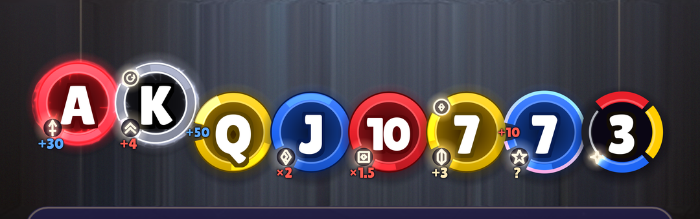
B
扫一眼（缩到手机上的真实观感）
A
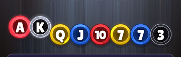
B
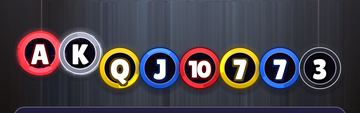
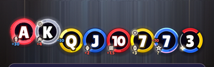
整屏
A
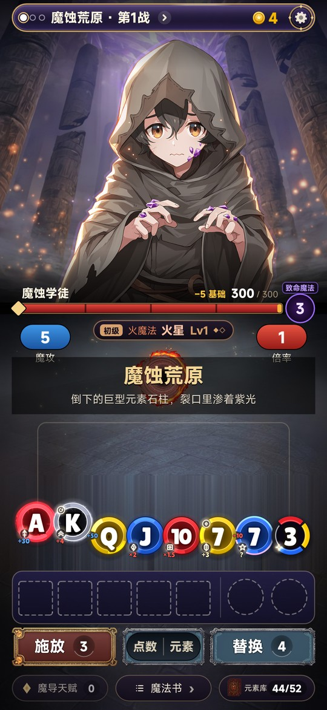
B
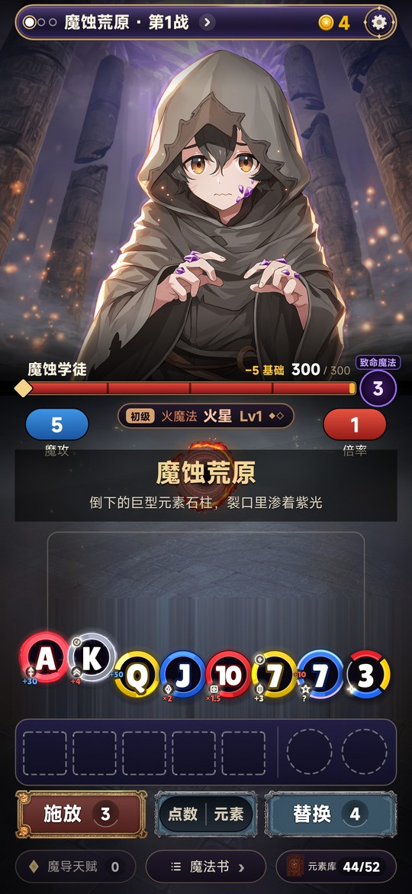
四、和第五轮对比（同一手牌，1:1）
第五轮

第六轮 A
第五轮 扫一眼
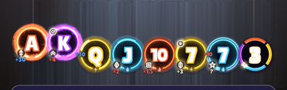
第六轮 A 扫一眼
五、四色 × 全部编号（手牌尺寸）
A
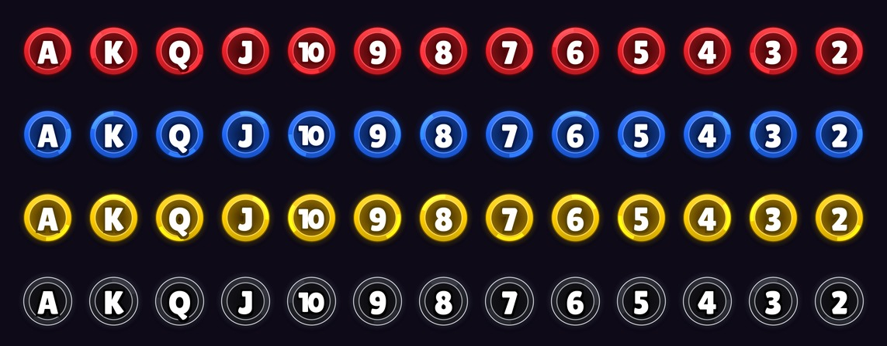
B
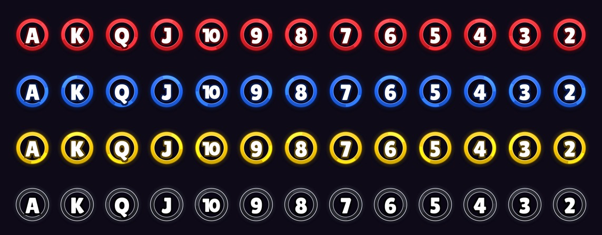
六、放大看（2 倍）
A
B
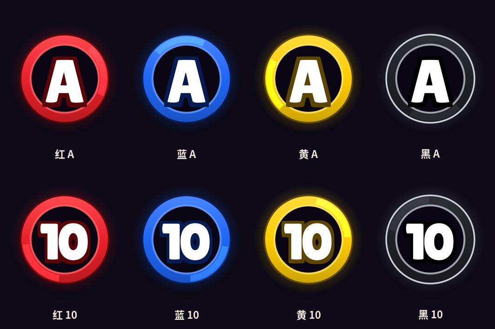
平时（上）/ 选中（下）
A
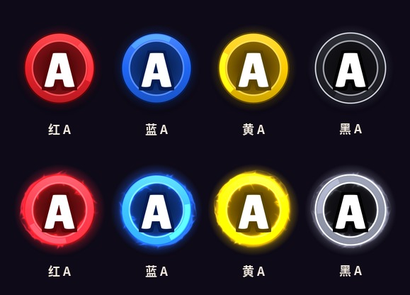
B
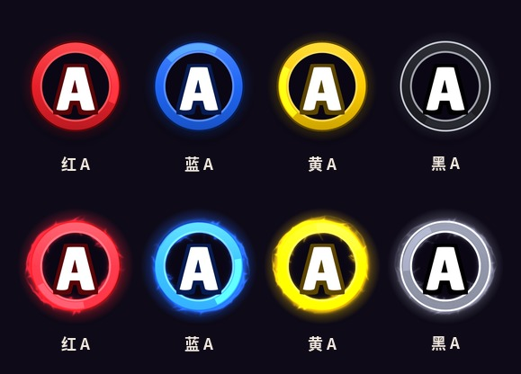
没有出的：8 种强化 / 印章 / 特效的单独大图、动效视频、色盲模拟——等颜色和编号定了再补。